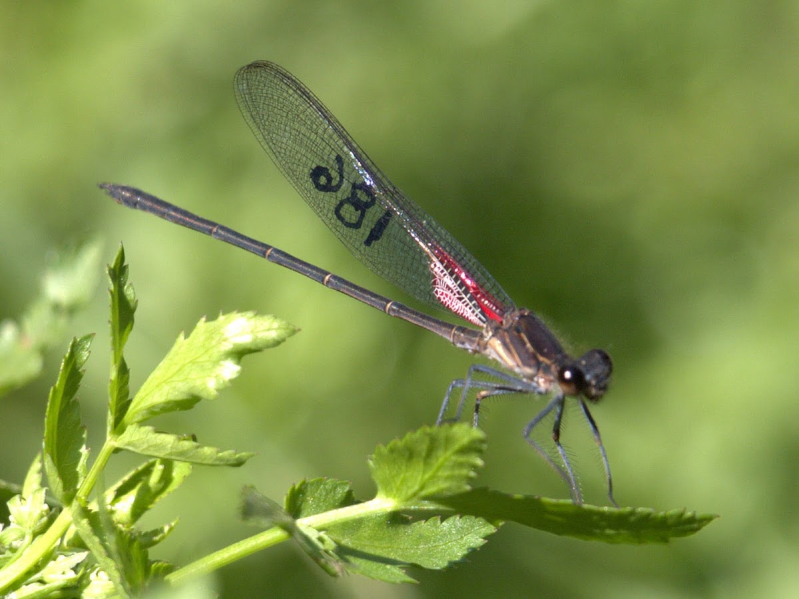
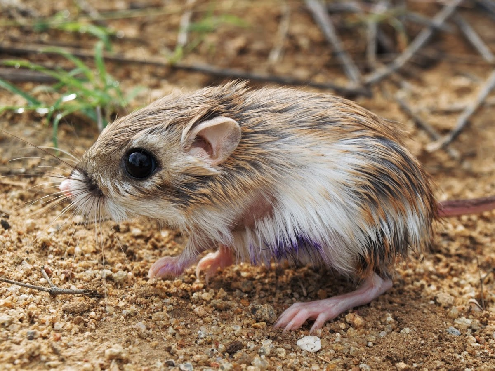

Research

Population dynamic of a Rubyspot damselfly in an urban area.
The loss of acuatic ecosystems in urban areas is caused by the exploitation of their resources and their pollution. This has led to the disappearance of local fauna populations due to the disturbance of their natural habitats by urbanization. A small population of the Canyon Rubyspot damselfly (Hetaerina vulnerata) is found in an isolated habitat inside the urban area of Mexico City, a species that was thought extirpated from the city due to habitat loss. My master's thesis work was focused on the current status of this damselfly population through its demography. [PDF (in Spanish) @ TESIUNAM]